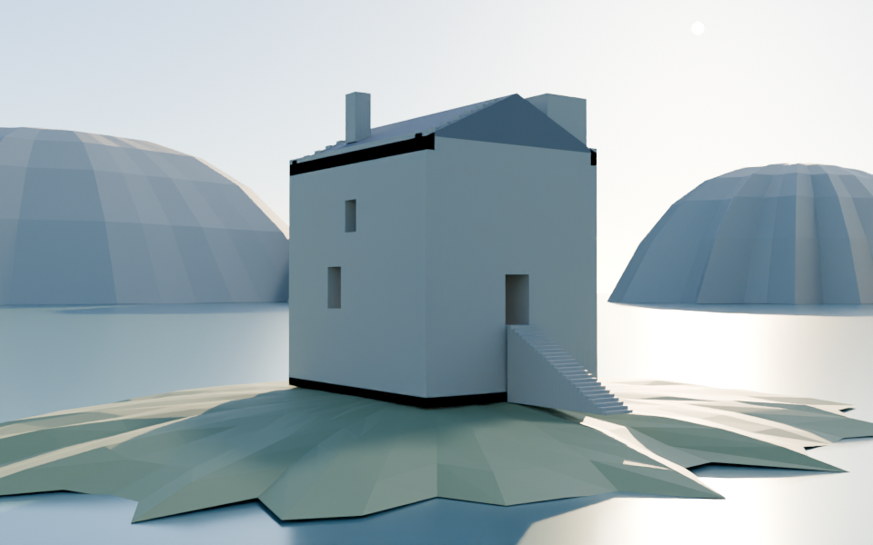

Castle Stalker
Första rumsliga studien i Blender. Här kan du granska proportioner, rum och kameravyer. Material och landskap är preliminära. Öppna den interaktiva vandringen och flygläget.

Första rumsliga studien i Blender. Här kan du granska proportioner, rum och kameravyer. Material och landskap är preliminära. Öppna den interaktiva vandringen och flygläget.
